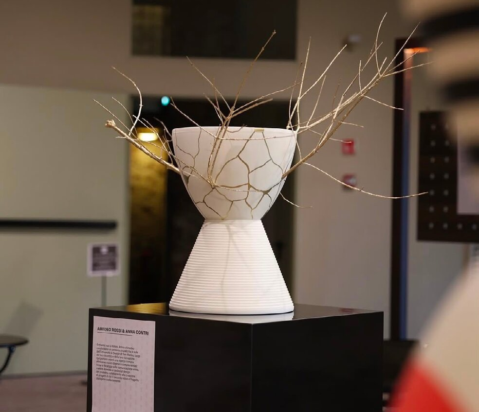
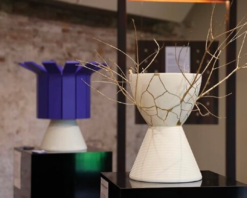
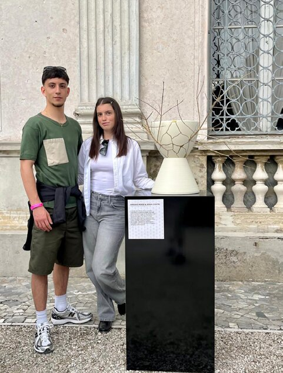
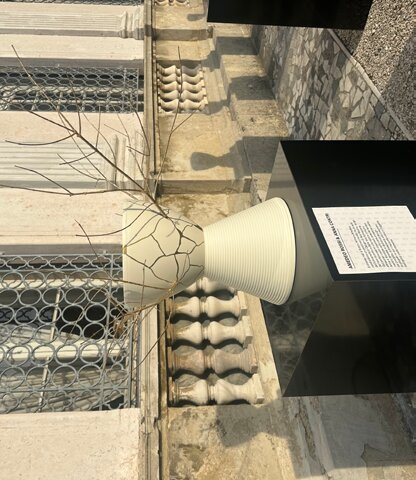

Ibuki
Product design · Sperimentazione · Modellistica

Ibuki nasce dall'incontro tra un oggetto industriale e una tecnica artigianale antica. Il punto di partenza è lo stool Prince Aha di Kartell, reinterpretato attraverso una decorazione ispirata al Kintsugi, l'arte giapponese che ripara le ceramiche danneggiate esaltandone le fratture anziché nasconderle.
Dalle linee dorate che attraversano la superficie dello stool si sviluppano quattro rami, anch'essi dorati, che sembrano germogliare dal centro dell'oggetto - come una fioritura che nasce proprio dal punto della rottura.
Ibuki nasce in occasione di Re-Vision Design, il progetto artistico e culturale creato da Il Prisma Proposte d'Interni - storico showroom di Rimini - per celebrare i suoi 50 anni di attività. Otto artisti sono stati invitati a reinterpretare lo stool Prince Aha di Philippe Starck per Kartell, ciascuno con un linguaggio personale. Progettato in collaborazione con Anna Contri.


